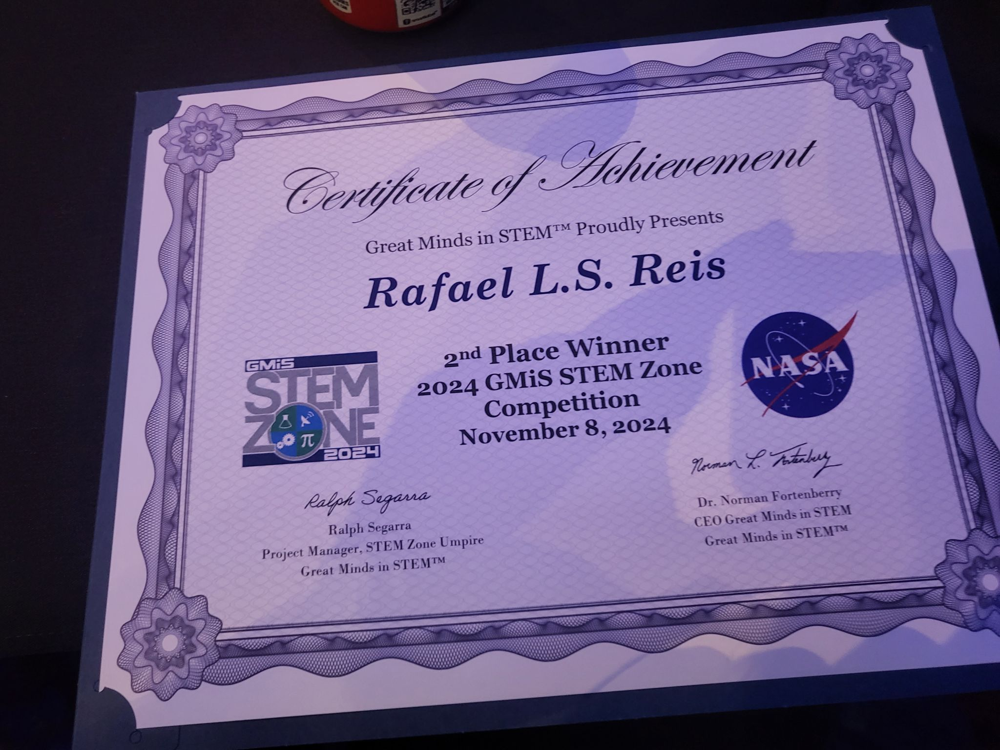

About Me
Welcome to my e-portfolio! I am Rafael L.S Reis, a proud Computer Science major at California State University, Monterey Bay, set to graduate in December 2025. My journey in tech is more than a career pursuit—it’s a mission fueled by curiosity, compassion, and a desire to create meaningful change.
Computer Science is my passion, not just because it allows me to solve problems, but because it empowers me to create tools that make life better for others. As a Teaching Assistant at a Hispanic-Serving Institution, I witness firsthand the challenges faced by students from diverse, socioeconomically impacted backgrounds. I know what it means to face obstacles and persist, and I am dedicated to helping others navigate these hurdles, offering support and mentorship to those who need it most.
As a Latino in tech, I take pride in representing and uplifting underrepresented voices in STEM. I believe in the power of education and opportunity to transform lives, and I strive to create spaces where students—especially minorities—can thrive. Whether through teaching, mentoring, or research, I work to empower others, fostering a culture of equity and inclusion in every space I inhabit.
Ethics and responsibility guide my approach to technology. I believe that innovation must not come at the expense of humanity. My research focuses on sustainability, ensuring that the tools we build today don’t burden future generations. Beyond the code, I want my work to contribute to a fairer, more inclusive society—one where every individual, regardless of background, has the opportunity to succeed.
This e-portfolio is a reflection of my journey, my values, and my aspirations. It is a space where I share not just my accomplishments but the impact I hope to create. Thank you for taking the time to learn about me and the work I am so passionate about.
Research and Achievements
Presented Research Poster at GMiS Texas 2024
Presented a research poster focusing on the relationship between software efficiency and energy usage. This work highlights how optimizing code can contribute to sustainable computing practices.
GMiS STEM Zone Competition
Awarded 2nd place in the GMiS STEM Zone Competition for a root cause analysis challenge. This achievement reflects my problem-solving skills and ability to apply analytical thinking under competitive conditions.
Award Certificate
Received the 2nd Place Award and NASA scholarship at the GMiS STEM Zone Competition. The certificate represents recognition of my technical and analytical contributions during the competition.
Work Experience
Undergraduate Researcher - Apple Scholar
California State University - Monterey Bay | May 2023 – Present
- Developing RAPL-based software to measure the impact of code efficiency on energy usage.
- Conducting research on the implications of code efficiency in real-world contexts.
Teaching Assistant ( Intro to Programming, Data Structures, Operating Systems)
California State University - Monterey Bay | Aug. 2023 – Present
- Transformed grading process by implementing JUnit and Python/Bash automation tools.
- Reduced evaluation time for 80+ students per assignment from 8 hours to a few seconds.
- Instructed classes of approximately 40 students, delivering hands-on lab sessions and lectures.
Volunteer IT Specialist
Homeless Garden Project - Santa Cruz | Dec. 2023 – Present
- Assited with various IT tasks including server migrations, setting backup routines and general help desk.
Volunteer Tech Support
Monterey County Free Libraries– Aug. 2024 - Present
- Helped library patrons with their tech issues and needs
- Worked with socioeconomically impacted society to bridge technological gaps
- Participated in book fairs and workshops